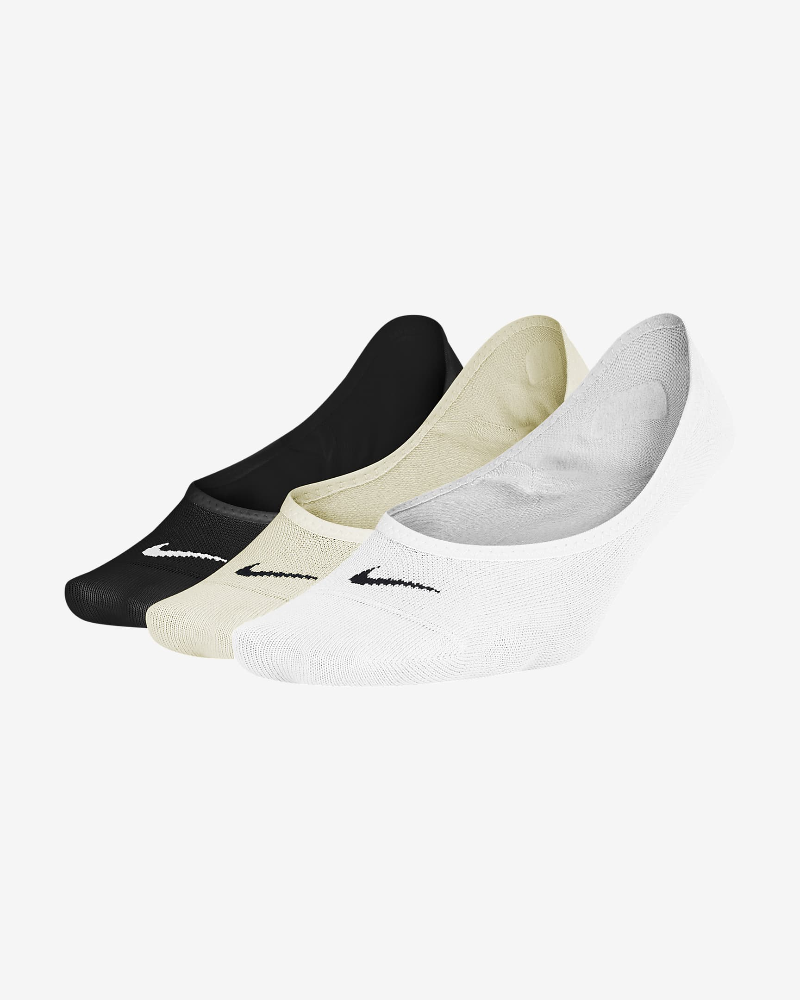
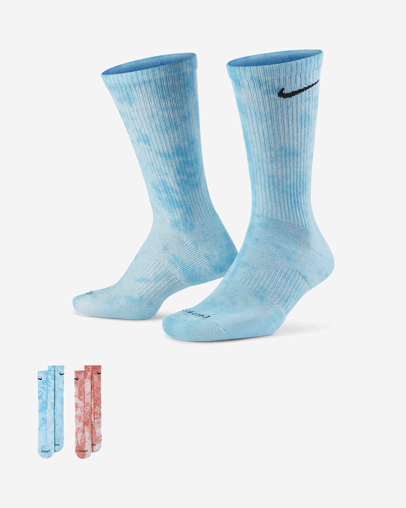
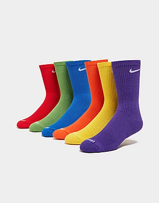
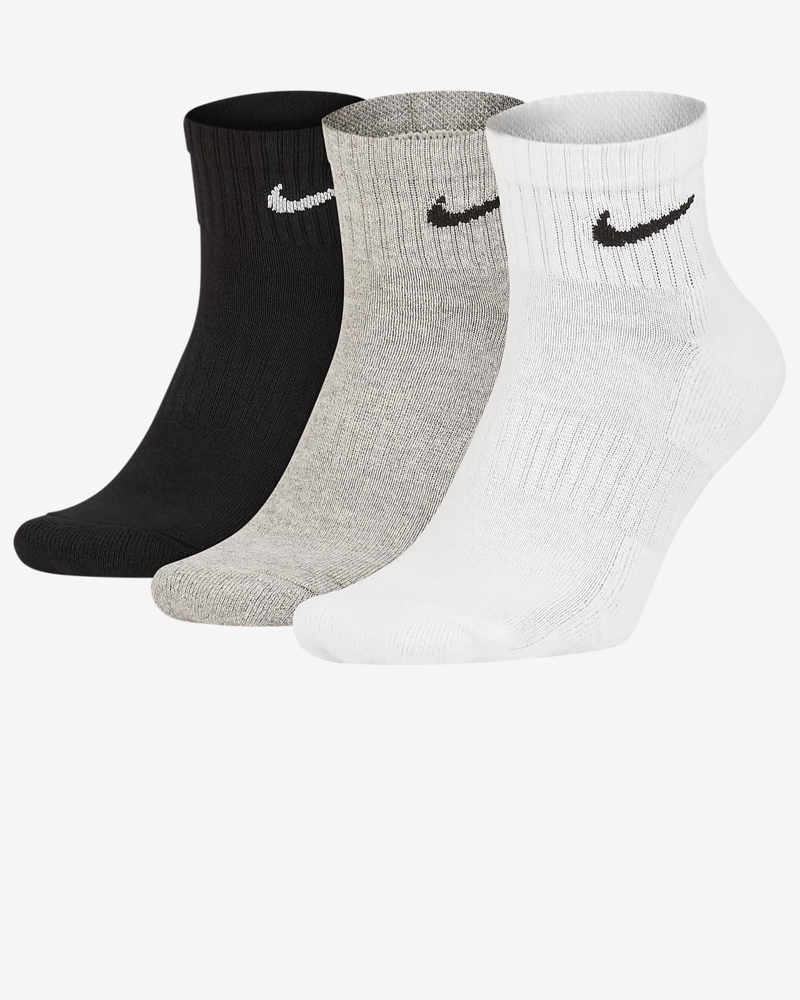

Nike Dri-Fit socks are made of four different materials that are Dri-Fit, Polyester, Nylon, and Spandex. The main two components to the socks are polyester and nike's trademark Dri-Fit material. COMFORT PLUS SUPPORT. The Nike Everyday Plus Cushioned Socks bring comfort to your workout with extra cushioning under the heel and forefoot and a snug, supportive arch band Most Nike socks are manufactured in Turkey, but you can also find some made in China
   | BARCODE | 00 0 49 12345 666666666 5 |
| SIZES | SS, S, M, L, XL, XXL |
| STOCK AVAILABLE | 550 |